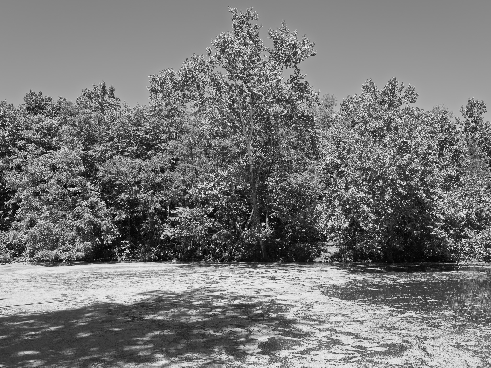
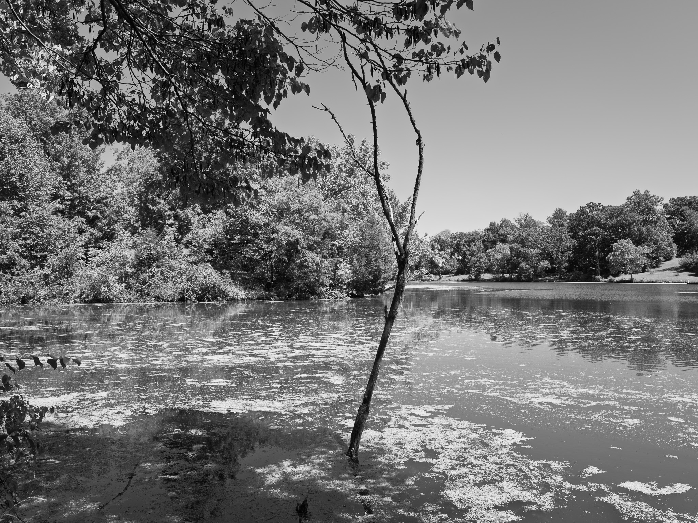
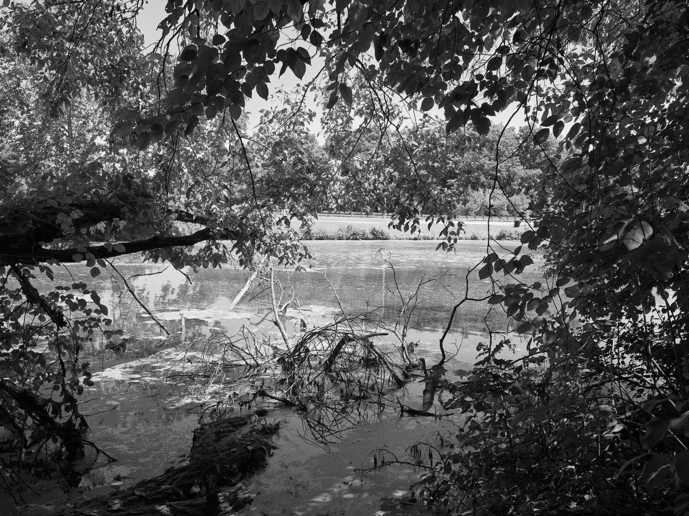
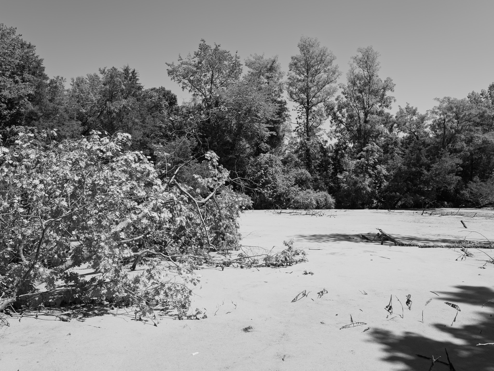
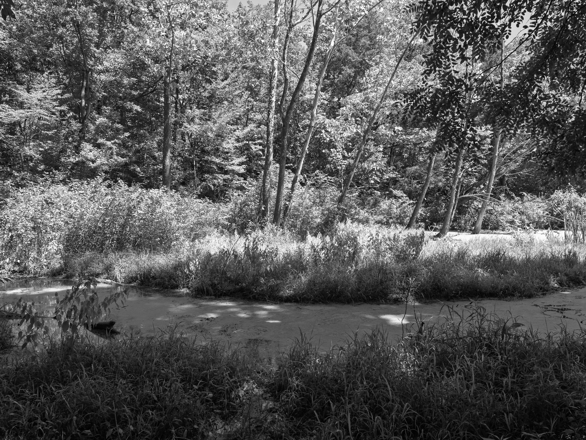
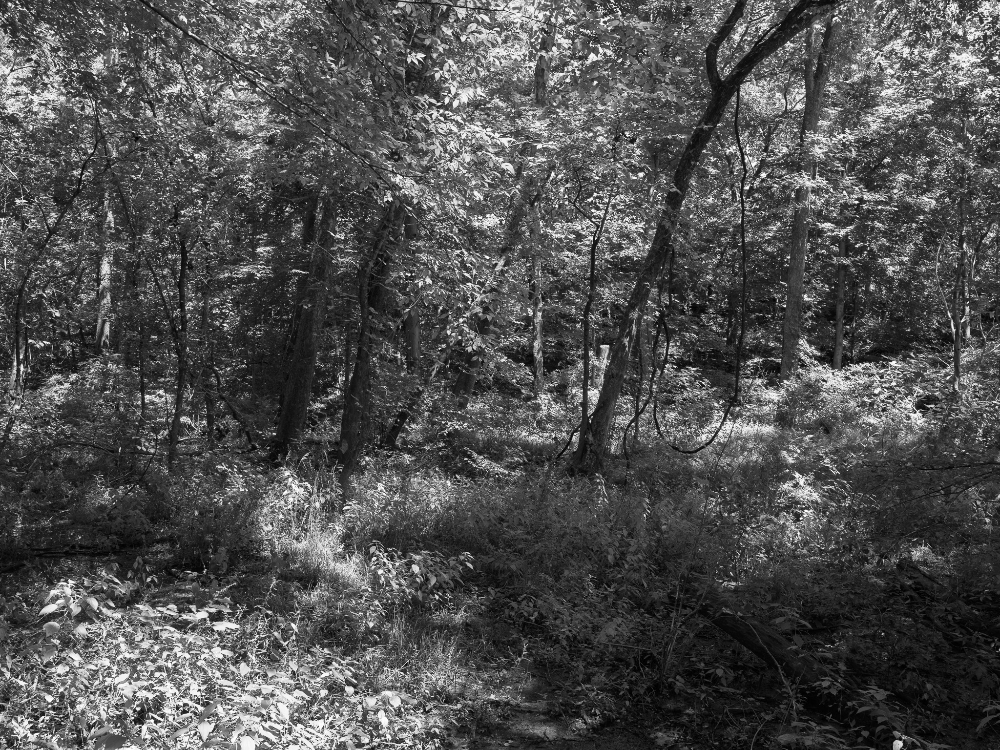
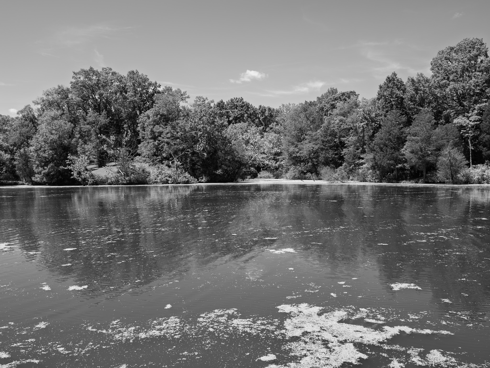

Public Lands Institute
Map
Images
Archive
About
General Butler State Resort Park
KY

General Butler State Resort Park 1 · 2026-08-18
_DSF4335.jpg

General Butler State Resort Park 2 · 2026-08-18
_DSF4351.jpg

General Butler State Resort Park 3 · 2026-08-18
_DSF4362.jpg

General Butler State Resort Park 4 · 2026-08-18
_DSF4364.jpg

General Butler State Resort Park 5 · 2026-08-18
_DSF4369.jpg

General Butler State Resort Park 6 · 2026-08-18
_DSF4371.jpg

General Butler State Resort Park 7 · 2026-08-18
_DSF4386.jpg
View all 7 images →
← Cave-in-Rock State Park
Big Oaks National Wildlife Refuge →